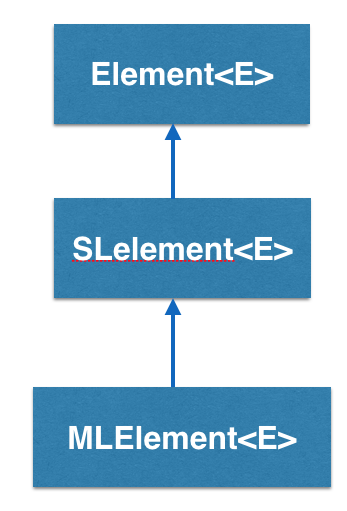

How does the MLelement<E> work?
This class extends SLelement (singly linked list element) to build multi-lists; multilists extend singly linked lists, by allowing any element of the list to be a list. Multilist elements contain a tag (getTag()/setTag()) that indicates if the element is a sublist or not; If the element points to a sublist, then the sublist field is the beginning of this sublist. If not, the data field contains the user specified data item and list continues (getNext()/setNext()). As in singly linked elements, the next pointer points to the following list element of the list or sublist.
See also
This tutorial gives an introduction to the usage of multi list. You can find the complete documentation of the features in the Doxygen documentation of the following classes and functions:
- MLelement [Java] [C++] [Python]
- Element [Java] [C++] [Python]
- ElementVisualizer [Java] [C++] [Python]
- LinkVisualizer [Java] [C++] [Python]
- Color [Java] [C++] [Python]
MLelement - An Example BRIDGES program
Example Details
- This example illustrates construction of a simple multilist, i.e., a list of lists
- This structure can be confusing given the forced directed rendering; use the mouse to move nodes around to make it more legible.
- In the example, the multilist is built, visual attributes assigned and visualized.
Here is the final code:
Java
C++
Python
Bridges Visualization
- Once all your code is in order, run your file.
- Assuming all your code is correct and it compiles correctly, a link to the Bridges website will be generated on the console.
- Copy/paste this link into your favorite browser to view a visualization of the data structure you just created.
- It should look something like this:
Well done! You’ve just created your Multilist!